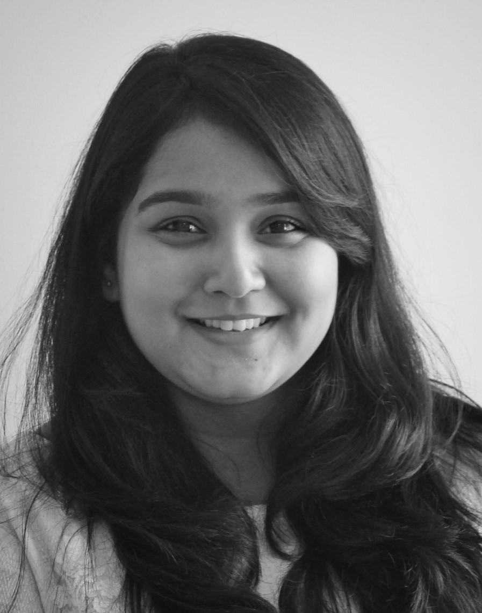

I am passionate, enthusiastic, adaptable and a team player. I possess impeccable leadership abilities. I’m a perfectionist and very particular about being organised. I love
taking up responsibilities and it is that, which drives me to stay on my toes all the time and eagerly wait for new opportunities.
I’ve taken up various roles in leadership and management over the years in school and college. I’ve been a part of several organising committees and clubs. I was also the school captain during high school and a technical core member for tech club during
intermediate. I have also volunteered under Centre for Social Action and as a teaching volunteer for an initiative iTeach under Rotaract.
To highlight my work in certain areas,
1. Core Committee Member, BMSCE Phase Shift 2019: Led the student committee towards the successful organisation of the Annual Tech Symposium and assisted in the coalescing of ideas from the industry in order to achieve high level of skill to help the students emerge as globally competent professionals.
Brought in a total sponsorship amount of 15 Lakhs for the fest and established relationships with over 25 companies.
2. Sponsorship Coordinator: Devised strategies for negotiation and set up effective presentation methodologies for on boarding potential clients and investors for the techno-cultural event "PHASE SHIFT" and cultural event "UTSAV". Undertook meetings and followed up with companies for their involvement in the fest.
3. Teaching Volunteer: I, from an initiative called iTeach from the Rotract Club of BMSCE visited a Government school once every week and taught kids about various developments in technology, their pros and cons and how they can be adapted efficiently in our day to day life.
4. Chief Coordinator, BMSCE Women's Cell: Responsible for the women's week celebration that takes place in BMSCE through which we emphasize equal rights for women and thrive towards educating the labour class about environment and sanitary issues.
Was a part of Robert Bosch's Women's Day celebration where I got a chance to interact with the women leaders in the industry.
5. Core Member, Tech Club CJC: Led the student committee towards the successful organisation of various events related to basic PU level electronics and organized workshops in collaboration with NOVATECH ROBO.
I’m very ambitious, hard working and determined. I give my best shot at any cost in order to get best results. I take a lot of interest in any work assigned to me.
I am currently pursuing my B.E. in Electronics and Communication engineering from B.M.S. college of Engineering, graduating May 2021. As an enthusiastic, hard working and ambitious person that I am, I’m looking for opportunities where I can connect with a lot of people and utilize the knowledge that I have gained to the best of my ability.